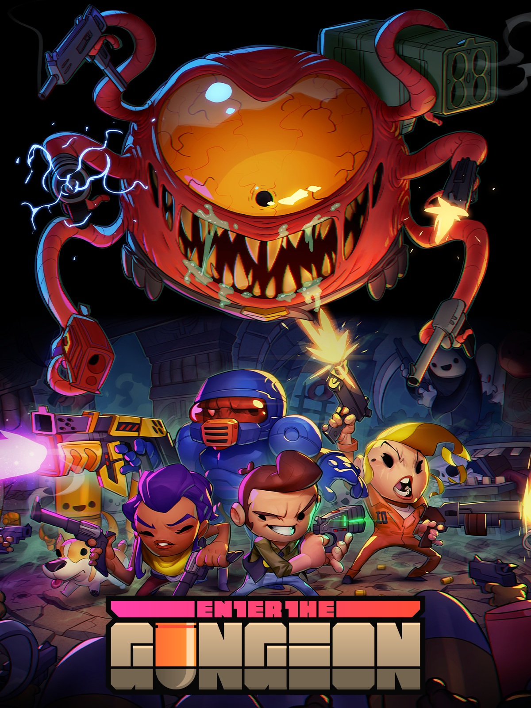
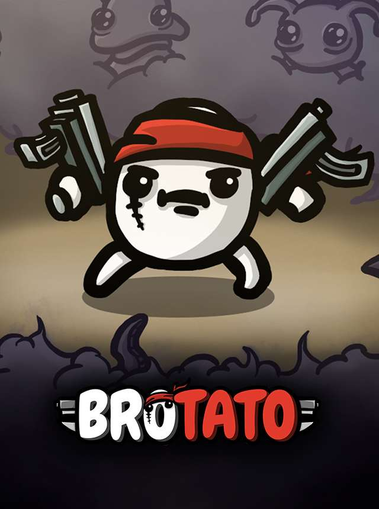
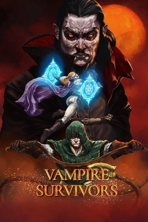
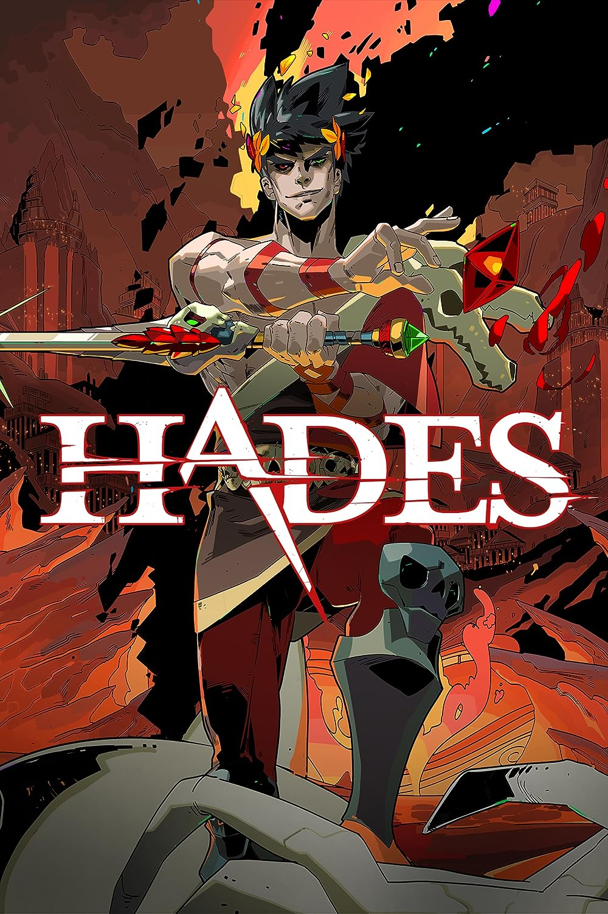
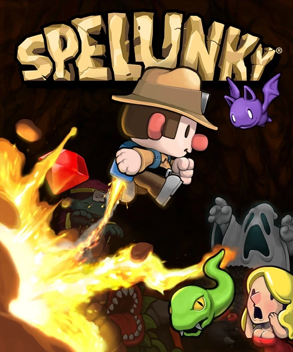
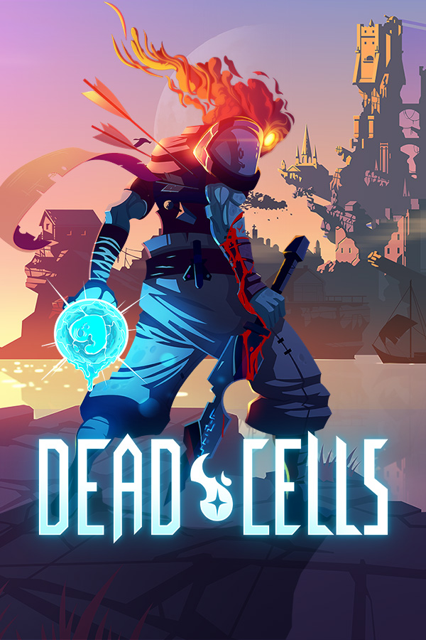
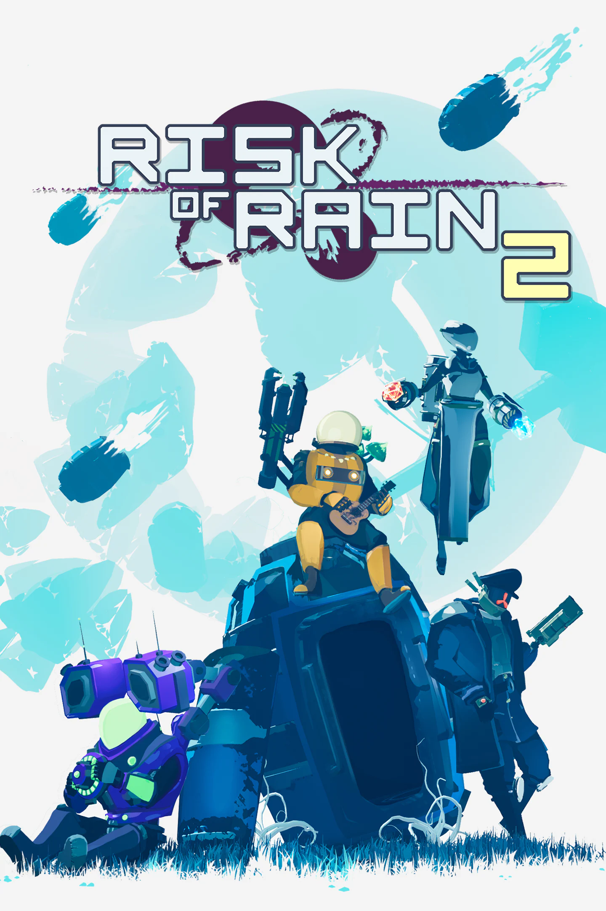

Rogue е видео игра за обхождане на подземия от Майкъл Той и Глен Уичман с по-късен принос от Кен Арнолд. В Rogue играчите контролират герой, докато изследват няколко нива на подземие, търсейки амулета на Йендор, разположен в най-ниското ниво на подземието.
The Binding of Isaac
The Binding of Isaac е Roguelike видео игра, проектирана от независими разработчици Edmund McMillen и Florian Himsl. Заглавието и сюжетът на играта са вдъхновени от библейската история за жертването на Исак. The Binding of Isaac е игра за обхождане на подземия отгоре надолу, представена с помощта на двуизмерни спрайтове, в които играчът контролира Isaac или други отключващи се герои, докато изследват подземията, разположени в мазето на Isaac. Героите се различават по скорост, количество здраве, количество щети, които нанасят, и други атрибути.
Enter the Gundeon

Enter the Gungeon е игра, подобна на bullet hell от 2016 г., разработена от Dodge Roll и публикувана от Devolver Digital. Enter the Gungeon е стрелба с куршуми отгоре надолу с елементи, подобни на измамници. Играчът поема контрола над един от четиримата герои, които трябва да стигнат до дъното на Gungeon, за да намерят магически пистолет, който може да "убие миналото".
Brotato

Brotato е видео игра roguelite със стрелба отгоре надолу на арена от 2023 г., създадена от френския независим разработчик Thomas Gervraud под името на студиото Blobfish. Играчът контролира един от няколко картофа. Целта е да избегнете възможно най-много вражески вълни с картофа.
Vampire Survivors

Vampire Survivors е roguelike shooter видеоигра от 2022 г., разработена и публикувана от Лука Галанте. Играчът избира един от множество герои с различни начални оръжия и бонуси и ги контролира на безкрайна сцена с автоматично генерирано, повтарящо се оформление.
Hades

Hades е roguelike видео игра от 2020 г., разработена и публикувана от Supergiant Games. Играчите контролират Загрей, синът на Хадес, докато той се опитва да избяга от Подземния свят, за да стигне до планината Олимп, понякога подпомаган от даровете, които другите олимпийци му дават.
Spelunky

Spelunky е налична 2D платформена игра от 2008 г., създадена от независимия разработчик Derek Yu и пусната като безплатен софтуер за Microsoft Windows. Целта на играта е да изследвате тунели, събирайки възможно най-много съкровища, като избягвате капани и врагове.
Dead cells

Dead Cells е игра roguelike-Metroidvania от 2018 г., разработена от Motion Twin и Evil Empire и публикувана от Motion Twin. Играчът контролира Затворника, аморфно създание, което пътува през остров, пълен с мутирали чудовища.
Risk of rain

Risk of Rain е игра на платформа roguelike от 2013 г., разработена от Hopoo Games и публикувана от Chucklefish. В началото на играта играчът избира един от дванадесет знака. По време на играта целта е да се намери телепорт, винаги поставен на произволно място на нивото. Докато играчите го търсят, те ще срещнат чудовища.